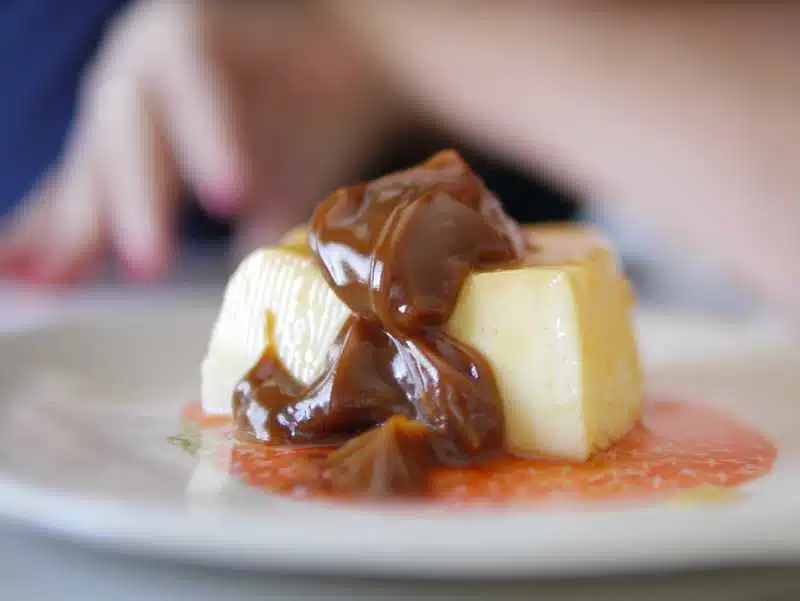

Flan con dulce de leche

Ingredientes
- 5 huevos
- 500 ml de leche
- 150 g de azúcar
- 1 cucharadita de esencia de vainilla
- Caramelo: 100 g de azúcar + 2 cucharadas de agua
- Dulce de leche para acompañar
Preparación
- Preparar el caramelo y volcar en el molde.
- Mezclar huevos, azúcar, vainilla y leche.
- Verter en el molde y cocinar a baño maría 45 min.
- Enfriar, llevar a la heladera y desmoldar.
Consejo Paulinesco: ¡Nunca olvides el dulce de leche!